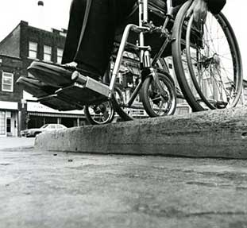

Accessibility Barriers
In the 21st century, almost everything we do has some degree of technology associated with it. In education, commerce, entertainment, transportation, and other fields, technology is an essential requirement for participation.
Yet despite all the advances in technology, many people still cannot participate. When technology is designed and deployed without accessibility in mind, barriers can be introduced that exclude people.
Creating products and systems that are accessible to people with disabilities often benefits everyone. For example, curb cuts were initially introduced to make crossing the street easier for people in wheelchairs but everyone benefits, including people pushing strollers, riding bikes, wheeling luggage, on skateboards, and jogging.
In the following pages, you'll read about some of the most common digital barriers and how eliminating them can make the web more useful for everyone.